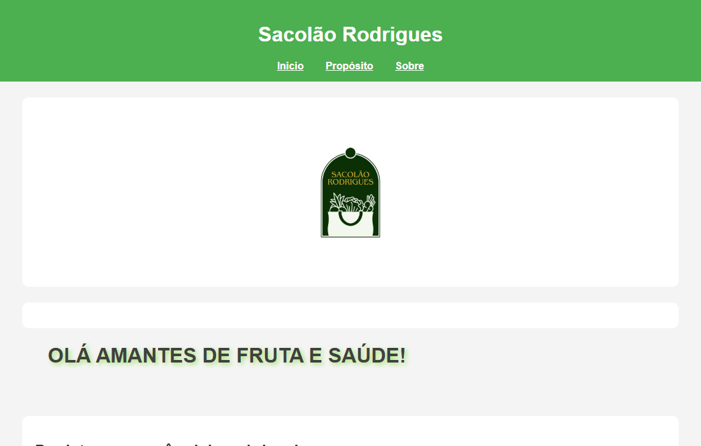

BonVoy
Projeto acadêmico em equipe para gerenciar pacotes de viagem. Implementei os formulários de cadastro e edição, com validação e integração ao JSON Server.
- Angular
- TypeScript
- JSON Server
Estudante de Ciência da Computação
No BonVoy, desenvolvi em Angular os formulários de cadastro e edição de pacotes. A edição carrega os dados pelo ID e avisa se o salvamento falhar. Busco um estágio em desenvolvimento de software.
Projeto acadêmico em equipe para gerenciar pacotes de viagem. Implementei os formulários de cadastro e edição, com validação e integração ao JSON Server.

Site do Sacolão Rodrigues com informações sobre frutas, legumes e verduras.
Programa em Java que valida nome, CPF e e-mail e gera um relatório com os cadastros.
Sou estudante de Ciência da Computação e tenho interesse em desenvolvimento web e de software. Uso projetos acadêmicos para praticar o que aprendo na graduação, da construção de interfaces à validação de dados.
Além da graduação, também estudo inglês.